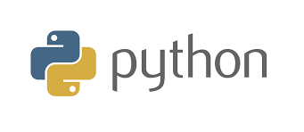

Python é uma linguagem Open-Source de propósito geral usado bastante em data science, machine learning, desenvolvimento de web, desenvolvimento de aplicativos, automação de scripts, fintechs e mais.
C# é uma linguagem de programação, multiparadigma, de tipagem forte, desenvolvida pela Microsoft como parte da plataforma .NET. A sua sintaxe orientada a objetos foi baseada no C++ mas inclui muitas influências de outras linguagens de programação, como Object Pascal e, principalmente, Java.
A linguagem de programação R auxilia na coleta e tratamento de dados. Além disso, ela é responsável por ajudar na implementação de algoritmos para realizar análise estatísticas, modelos de inferência, regressão e visualização de dados.
Java é uma linguagem de programação e plataforma computacional lançada pela primeira vez pela Sun Microsystems em 1995. Existem muitas aplicações e sites que não funcionarão, a menos que você tenha o Java instalado, e mais desses são criados todos os dias. O Java é rápido, seguro e confiável.